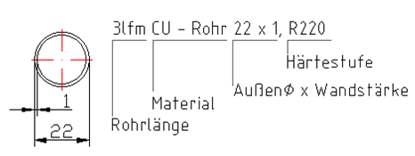
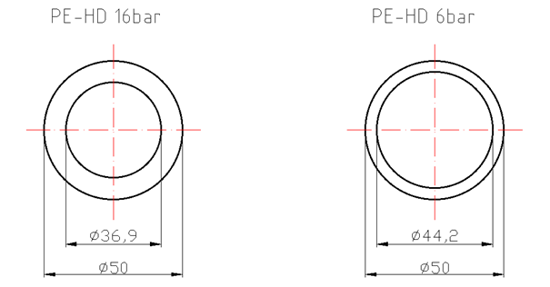
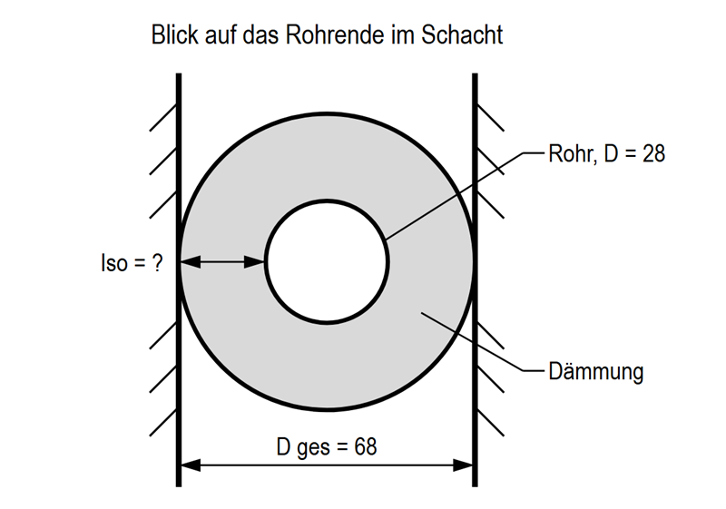
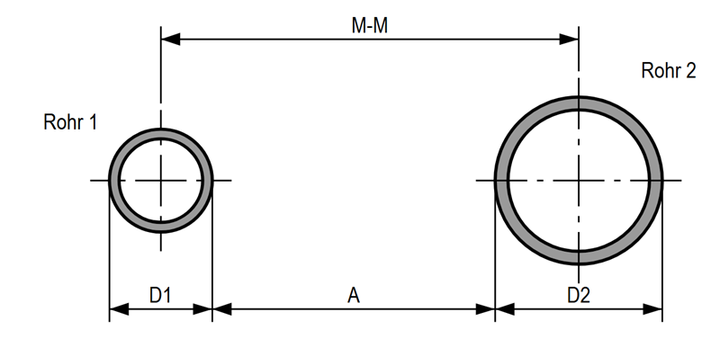
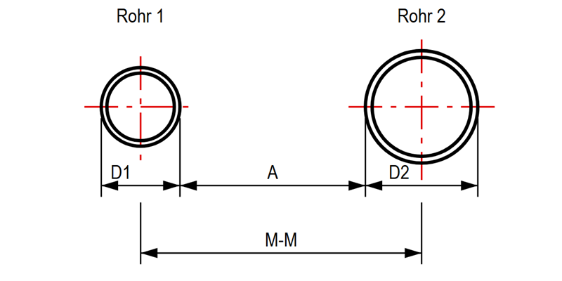
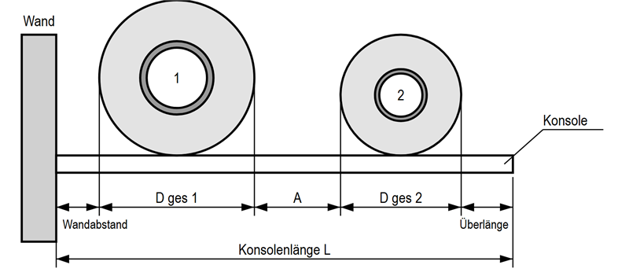
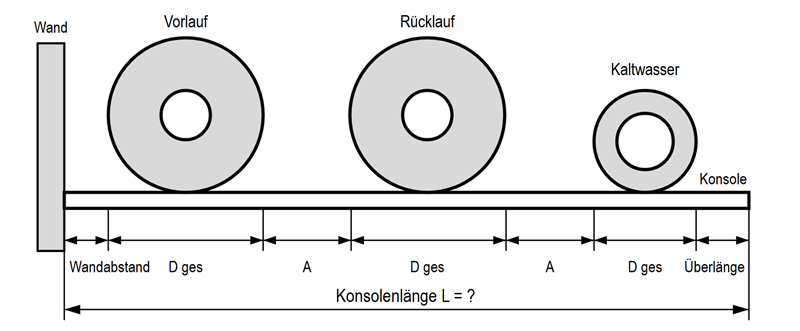
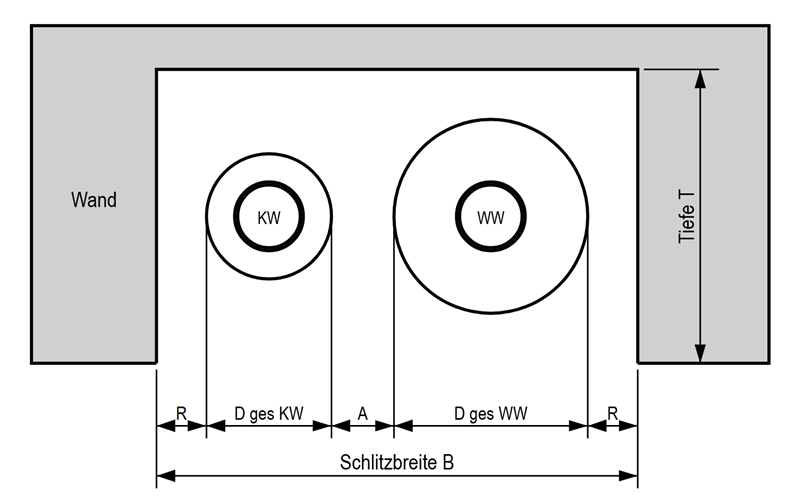
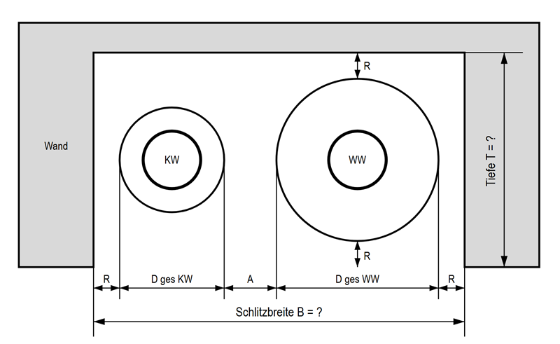
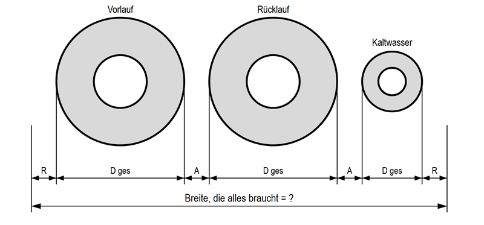

Rohrdurchmesser, Dämmung, Rohrabstände
Heute lernst du: die Maße von einem Rohr, eine Rohrbestellung lesen, die Rohrtabelle, Rohre mit Dämmung, den Abstand Mitte-Mitte und die Länge von einer Rohrkonsole.
So arbeitest du: Lies zuerst den grauen Infokasten. Mach dann die Aufgaben darunter. Die Antworten findest du im Infokasten. Fertig? Tippe bei jeder Aufgabe auf „Prüfen“. Bessere deine Fehler aus.
Die Kästen mit Strichellinie und ★★★ („Mehr wissen“ und „Vertiefung“) sind erweiterte Aufgabenstellungen.
Rechne immer zuerst alles in mm um. Schreib bei jeder Zahl die Einheit dazu.
Infokasten A: Wie groß ist ein Rohr? (Rohrmaße)
Beispiel: Rohr D = 40 mm, s = 5 mm → d = 40 mm − 2 · 5 mm = 40 mm − 10 mm = 30 mm Die Rohrangabe D x s heißt: Außendurchmesser und Wandstärke. „Rohr 28 x 1,5“ heißt: D = 28 mm, s = 1,5 mm. Achtung: Das x heißt hier nicht mal rechnen! Es trennt nur die zwei Maße. |
Aufgabe 1 ★ / ★★
Lies Infokasten A. Rechne die fehlenden Maße aus. Schreib die Rechnung und das Ergebnis in die Felder.
a) ★ leicht: Rechne den Innendurchmesser d aus. Formel: d = D − 2 · s
| Rohr | D x s | Rechnung | d |
|---|---|---|---|
| Kupferrohr | 28 x 1,5 | ||
| Mehrschichtverbundrohr | 26 x 3 | ||
| PE-Rohr | 40 x 3,7 |
b) ★★ mittel: Rechne die Wandstärke s aus. Formel: s = (D − d) : 2
| Rohr | D | d | Rechnung | s |
|---|---|---|---|---|
| Kupferrohr | 42 mm | 39 mm | ||
| Abflussrohr | 110 mm | 104,6 mm |
c) ★ leicht: Rechne den Außenradius R aus. Formel: R = D : 2
| D = 22 mm | → | R = | |
| D = 48,3 mm | → | R = |
Aufgabe 2a ★★ mittel
Ein Lehrling hat gerechnet. Nicht alles stimmt.
Kreuze an: stimmt oder stimmt nicht. Stimmt es nicht, schreib das richtige Ergebnis dazu.
| Rechnung vom Lehrling | stimmt | stimmt nicht | richtig ist |
|---|---|---|---|
| Rohr 54 x 2. Gesucht: Innendurchmesser d d = 54 mm − 2 mm = 52 mm | |||
| Rohr 22 x 1. Gesucht: Innendurchmesser d d = 22 mm − 2 · 1 mm = 20 mm | |||
| Rohr 35 x 1,5. Gesucht: Außenradius R R = 35 mm : 2 = 17,5 mm | |||
| D = 18 mm, d = 16 mm. Gesucht: Wandstärke s s = 18 mm − 16 mm = 2 mm |
Aufgabe 2b ★★★ schwer – Gut versteckte Fehler
Diesmal hat der Lehrling die Fehler gut versteckt. Schau genau hin.
Kreuze an: stimmt oder stimmt nicht. Stimmt es nicht, schreib die Nummer vom Fehler und das richtige Ergebnis dazu.
Stimmt es? Dann bleiben die zwei Felder leer. Ein Fehler kann auch zweimal vorkommen.
| Diese Fehler gibt es |
|---|
| 1 = cm und mm verwechselt 2 = D statt D ges genommen 3 = Durchmesser und Radius verwechselt 4 = Dämmung nur einmal gerechnet (statt 2 · Iso) 5 = Rechenfehler beim Zusammenzählen |
| stimmt | stimmt nicht | Fehler | richtig ist |
|---|---|---|---|
| 1. Rohr 22 x 1, Iso = 20 mm. Gesucht: D ges D ges = 22 mm + 20 mm = 42 mm | |||
| 2. Zwei Rohre, D = 40 mm, A = 6 cm. Gesucht: M-M M-M = 20 mm + 6 mm + 20 mm = 46 mm | |||
| 3. Rohr 50 x 4,6. Gesucht: d d = 50 mm − 2 · 4,6 mm = 40,8 mm | |||
| 4. Zwei Rohre, D = 22 mm, A = 50 mm. Gesucht: M-M M-M = 11 mm + 50 mm + 11 mm = 82 mm | |||
| 5. Zwei gedämmte Rohre: D = 20 mm, D ges je 60 mm, A = 40 mm. Gesucht: M-M M-M = 10 mm + 40 mm + 10 mm = 60 mm | |||
| 6. Rohr D = 32 mm. Gesucht: Außenradius R R = 32 mm | |||
Infokasten A2: Wie bestellt man ein Rohr? (Rohrbezeichnung)
|
So steht ein Rohr auf der Bestellung oder dem Lieferschein:  • lfm = Laufmeter (so viele Meter Rohr) • CU = Kupfer • R220, R250, R290 = Härte vom Kupferrohr: R220 = weich (im Ring), R250 = halbhart, R290 = hart (in Stangen). Je größer die Zahl, desto härter das Rohr. |
Aufgabe 3 ★ / ★★ – Die Rohrbestellung
a) ★ leicht: Auf dem Lieferschein steht: 5 lfm CU-Rohr 15 x 1, R250
Lies Infokasten A2. Was bedeutet jeder Teil? Füll die Tabelle aus.
| Teil | Das bedeutet es |
|---|---|
| 5 lfm | |
| CU | |
| 15 x 1 | |
| R250 |
b) ★ Wie groß ist der Innendurchmesser d von diesem Rohr?
| d = |
c) ★★ mittel: Dein Chef sagt: „Bestell 8 Meter Kupferrohr. Außen hat es 22 mm, die Wand hat 1 mm. Wir brauchen hartes Kupferrohr.“
Schreib die Bestellung so wie im Infokasten A2.
Infokasten B: Wie heißt die Rohrgröße? (Nennweite DN und Nenndruck PN)
|
DN heißt Nennweite (englisch: Diameter Nominal). Mit DN passen Rohre, Fittinge, Flansche und Armaturen zusammen. • Fittinge = Formstücke, z. B. Bogen, T-Stück, Muffe • Flansch = Rohrverbindung mit Schrauben • Armaturen = Ventile, Hähne Bei Gewinderohren ist DN ungefähr der Innendurchmesser in mm. Aber nicht genau! Die genauen Maße stehen in der Rohrtabelle. Kupferrohre, Kunststoffrohre und Verbundrohre gibst du mit D x s an, z. B. Kupferrohr 22 x 1. So liest du die Tabelle: Such die Zeile mit deiner DN oder deinem Zoll. Geh in der Zeile nach rechts zur Spalte, die du brauchst.
PN heißt Nenndruck (englisch: Pressure Nominal). Das ist der höchste Druck, den ein Rohr aushält. Die Zahl nach PN ist der Druck in bar, z. B. PN 16 = 16 bar. Merke: Je höher der Nenndruck, desto dicker ist die Wand vom Rohr. |
Rohrtabelle: Mittelschwere Gewinderohre (alle Maße in mm)
Mittelschwer: Gewinderohre gibt es mit dünnerer und dickerer Wand. Wir verwenden immer die mittelschweren.
| DN | Zoll | D außen | s Wand | d innen |
|---|---|---|---|---|
| 10 | ⅜″ | 17,2 | 2,35 | 12,5 |
| 15 | ½″ | 21,3 | 2,65 | 16,0 |
| 20 | ¾″ | 26,9 | 2,65 | 21,6 |
| 25 | 1″ | 33,7 | 3,25 | 27,2 |
| 32 | 1¼″ | 42,4 | 3,25 | 35,9 |
| 40 | 1½″ | 48,3 | 3,25 | 41,8 |
| 50 | 2″ | 60,3 | 3,65 | 53,0 |
| 65 | 2½″ | 76,1 | 3,65 | 68,8 |
| 80 | 3″ | 88,9 | 4,05 | 80,8 |
| 100 | 4″ | 114,3 | 4,5 | 105,3 |
|
Mehr wissen ★★★: Nenndruck PN • PN gibt es nicht nur bei Rohren, sondern auch bei Flanschen und Armaturen. • Druckstufen: PN 6 – PN 10 – PN 16 – PN 25 – PN 40 |
Aufgabe 5 ★ leicht
Lies Infokasten B. Such die Werte in der Rohrtabelle. Schreib sie in die leeren Felder.
Die erste Zeile ist ein Beispiel.
| DN | Zoll | D außen | s Wand | d innen |
|---|---|---|---|---|
| 15 | ½″ | 21,3 mm | 2,65 mm | 16,0 mm |
| 20 | ||||
| 2″ | ||||
| 1¼″ | ||||
| 48,3 mm |
Aufgabe 6 ★ / ★★ – Zwei Kunststoffrohre
Im Lager liegen zwei Rohre aus PE-HD (ein Kunststoff). Beide sind außen 50 mm. Ein Rohr hält 16 bar aus, das andere 6 bar.

a) ★ Lies die Maße im Bild ab. Rechne die Wandstärke s aus. Formel: s = (D − d) : 2
| Rohr | D | d | Rechnung | s |
|---|---|---|---|---|
| 16 bar | ||||
| 6 bar |
b) ★★ Lies Infokasten B. Kreuze das richtige Wort an.
| Das Rohr für 16 bar hat die ________ Wand. | dickere | dünnere |
| Je höher der Druck, desto ________ ist die Wand. | dicker | dünner |
| Innen ist mehr Platz für das Wasser beim ________. | 16-bar-Rohr | 6-bar-Rohr |
c) ★★ Eine Brunnenpumpe drückt das Wasser mit bis zu 10 bar in die Leitung. Welches Rohr nimmst du? Kreuze an und begründe.
| 6-bar-Rohr | 16-bar-Rohr |
| Weil … |
Infokasten C: Warum und wie dämmt man Rohre? (Rohrdämmung)
|
Warum dämmt man Rohre? • Heizung und Warmwasser: Die Wärme bleibt im Rohr. Das spart Energie. • Kaltwasser: Das Wasser bleibt kalt (unter 25 °C). Sonst können sich Keime vermehren (Keime = winzige Lebewesen, z. B. Bakterien, sie machen krank). • Kein Schwitzwasser: An einem kalten Rohr bilden sich sonst Wassertropfen. • Frostschutz: Das Wasser im Rohr friert nicht so schnell ein. • Schallschutz: Man hört das Wasser im Rohr weniger. |
Achtung: Bei einem Gewinderohr steht oft nur DN oder Zoll da. Den Außendurchmesser D suchst du dann in der Rohrtabelle. |
Aufgabe 7 ★ / ★★
Lies Infokasten C. Rechne den Außendurchmesser mit Dämmung D ges aus.
Formel: D ges = D + 2 · Iso. Bei den Gewinderohren suchst du D zuerst in der Rohrtabelle.
| Rohr | D | Iso | Rechnung | D ges |
|---|---|---|---|---|
| ★ Kupferrohr 22 x 1 | 22 mm | 20 mm | ||
| ★ Verbundrohr 32 x 3 | 32 mm | 13 mm | ||
| ★★ Gewinderohr DN 25 | 30 mm | |||
| ★★ Gewinderohr 1½″ | 40 mm |
Rechne das letzte Ergebnis (Gewinderohr 1½″) in cm um. Runde auf 1 Kommastelle.
| D ges = |
Aufgabe 8 ★★ mittel
Im Schacht ist wenig Platz. Die Wände stehen so eng, dass das Rohr mit Dämmung außen höchstens D ges dick sein darf. Die Dämmung liegt rund um das Rohr und ist überall gleich dick.
Lies Infokasten C. Gesucht: Wie dick darf die Dämmung (Iso) höchstens sein? Rechne in mm.
Formel: Iso = (D ges − D) : 2

a) Kupferrohr 28 x 1,5. Das Rohr hat außen D = 28 mm. Im Schacht ist D ges = 68 mm frei (siehe Zeichnung).
| Einsetzen: Iso = | |
| Ergebnis: Iso = |
b) Gewinderohr DN 32. Im Schacht ist D ges = 110 mm frei. Gesucht ist wieder Iso. Den Außendurchmesser D suchst du in der Rohrtabelle. Die Zeichnung gilt auch hier. Gib das Ergebnis in mm und in cm an. Runde die cm auf 1 Kommastelle.
| D aus der Tabelle: | |
| Einsetzen: Iso = | |
| Ergebnis: Iso = |
Infokasten D: Wie weit sind zwei Rohre auseinander? (Mitte-Mitte-Maß)
|
Liegen zwei Rohre nebeneinander, gibt es zwei Maße: • A = Abstand zwischen den Rohren (vom Rand von Rohr 1 bis zum Rand von Rohr 2) • M-M = Abstand von Mitte Rohr 1 bis Mitte Rohr 2  Von der Mitte bis zum Rand ist es ein halber Durchmesser. Darum: M-M = D1 : 2 + A + D2 : 2 Beispiel: zwei Rohre mit D = 22 mm, A = 50 mm → M-M = 11 mm + 50 mm + 11 mm = 72 mm Rohre mit Dämmung: Dann nimmst du D ges statt D. A geht dann von Dämmung zu Dämmung. M-M ist bekannt, A ist gesucht? A = M-M − (D1 : 2) − (D2 : 2) (zuerst die Klammern rechnen) |
Aufgabe 9 ★ / ★★
Lies Infokasten D. Rechne das Maß M-M aus. Schreib jeden Schritt auf.

Nur Prinzip-Skizze. Mit Dämmung (c) nimmst du D ges statt D.
a) ★ leicht: zwei Kupferrohre 28 x 1,5. A = 60 mm. Rechne in mm.
| halbe Durchmesser: | |
| Einsetzen: M-M = | |
| Ergebnis: M-M = |
b) ★★ mittel: Gewinderohr DN 20 und Gewinderohr DN 40. A = 12 cm. Rechne in mm, dann in cm. Runde auf 1 Kommastelle.
Tipp: D1 und D2 findest du in der Rohrtabelle. Rechne A zuerst in mm um.
| D aus der Tabelle: | |
| halbe Durchmesser: | |
| Einsetzen: M-M = | |
| Ergebnis: M-M = |
c) ★★ mittel: zwei Kupferrohre mit Dämmung. A = 40 mm (von Dämmung zu Dämmung).
Rohr 1: 18 x 1, Iso = 20 mm. Rohr 2: 22 x 1, Iso = 20 mm.
| D ges 1 = | |
| D ges 2 = | |
| Einsetzen: M-M = | |
| Ergebnis: M-M = |
Aufgabe 10 ★★ mittel
Zwei Gewinderohre DN 25, M-M = 150 mm. Lies Infokasten D. Rechne den Abstand A in mm.
| D aus der Tabelle: | |
| halbe Durchmesser: | |
| Einsetzen: A = | |
| Ergebnis: A = |
Infokasten E: Wie lang muss der Träger sein? (Rohrkonsole)
|
Eine Rohrkonsole ist ein Träger an der Wand. Darauf liegen die Rohre mit den Rohrschellen (Rohrschelle = Ring, der das Rohr festhält).  • Wandabstand: von der Wand bis zum Rand von Rohr 1 (mit Dämmung) • A: Abstand zwischen den Rohren, von Dämmung zu Dämmung • Überlänge: Die Konsole steht hinter dem letzten Rohr noch ein Stück vor. Formel (2 Rohre): L = Wandabstand + D ges 1 + A + D ges 2 + Überlänge Merke: Bei 3 Rohren gibt es 2 Abstände A. Bei 4 Rohren gibt es 3 Abstände A. So rechnest du: 1. D aus der Tabelle suchen. 2. D ges für jedes Rohr. 3. Alles in mm umrechnen. 4. Alles zusammenzählen. |
Aufgabe 11 ★★ mittel
An einer Konsole hängen zwei Gewinderohre mit Dämmung. Zwischen den Rohren sollen 8 cm Abstand sein.
Lies Infokasten E. Füll die Tabelle aus. Wie lang ist die Konsole?
Achtung cm und mm! In der letzten Spalte steht alles in mm. Beispiel: 5 cm = 50 mm.
| Teil | DN | D (Tabelle) | Iso | Maß bzw. D ges = D + 2 · Iso | Länge in mm |
|---|---|---|---|---|---|
| Wandabstand | – | – | – | 3 cm | |
| Rohr 1 | 32 | 30 mm | |||
| Abstand A | – | – | – | 8 cm | |
| Rohr 2 | 20 | 20 mm | |||
| Überlänge | – | – | – | 2 cm | |
| Konsolenlänge L (alles zusammenzählen) | |||||
| L in cm (runde auf 1 Kommastelle): |
Aufgabe 12 ★★ mittel: Konsole im Heizraum
Im Heizraum montierst du eine Konsole für drei Rohre. Von der Wand weg: Vorlauf, Rücklauf, Kaltwasser.
| Das weißt du |
|---|
| Vorlauf und Rücklauf: Kupferrohr 28 x 1,5, Dämmung je 30 mm |
| Kaltwasser: Verbundrohr 32 x 3, Dämmung 13 mm |
| Wandabstand 25 mm, Abstand zwischen den Rohren je 5 cm, Überlänge 3 cm |
| Im Lager gibt es Konsolen mit 300 mm, 400 mm und 500 mm Länge. |

a) Wie lang muss die Konsole mindestens sein? Rechne in mm. Füll jede Zeile aus.
Tipp: 3 Rohre → 2 Abstände A.
| D ges Vorlauf = | |
| D ges Rücklauf = | |
| D ges Kaltwasser = | |
| Abstand A = 5 cm = | |
| Überlänge = 3 cm = | |
| 2 Abstände A = | |
| Einsetzen: L = | |
| Ergebnis: L = |
b) Welche Konsole nimmst du aus dem Lager? Nimm die kürzeste, die lang genug ist. Kreuze an.
| 300 mm | 400 mm | 500 mm |
Infokasten F: Wie groß wird das Loch in der Wand? (Mauerschlitz)
|
Manchmal kommen Rohre in einen Schlitz in der Wand. Das Bild zeigt den Schlitz von oben. Das nennt man Grundriss. KW = Kaltwasser WW = Warmwasser  • R = Rand: Platz zwischen Dämmung und Mauer • Schlitzbreite B = R + D ges KW + A + D ges WW + R • Tiefe T = Rand hinten + größtes D ges + Rand vorne Für M-M im Schlitz nimmst du D ges, weil die Rohre gedämmt sind. |
Aufgabe 13 ★★ mittel
In einem Bad kommen eine Kaltwasser- und eine Warmwasserleitung in einen Mauerschlitz.
| Das weißt du |
|---|
| Kaltwasser (KW): Kupferrohr 22 x 1, Dämmung 9 mm |
| Warmwasser (WW): Kupferrohr 22 x 1, Dämmung 20 mm |
| Rand R überall 10 mm (links, rechts, hinten, vorne). Abstand A zwischen den Rohren 20 mm. |
| Der Polier (Chef auf der Baustelle) sagt: „Der Schlitz darf höchstens 8 cm tief sein.“ |

a) Wie breit und wie tief muss der Schlitz sein? Lies Infokasten F. Rechne in mm.
| D ges KW = | |
| D ges WW = | |
| Breite B = | |
| Tiefe T = |
b) Passt der Schlitz zur Vorgabe vom Polier? Kreuze an. Ergänze den Satz.
| ja | nein |
| Der Schlitz ist mm tief. Erlaubt sind 8 cm = mm. |
c) Lies Infokasten D. Wie groß ist das Maß M-M zwischen den beiden Rohren? Nimm D ges.
| Einsetzen: M-M = | |
| Ergebnis: M-M = |
Aufgabe 14 ★★★ Vertiefung: Passt es in den Schacht?
In einem Installationsschacht sollen drei Rohre nebeneinander hängen. Der Schacht ist innen 250 mm breit.
| Das weißt du |
|---|
| Vorlauf und Rücklauf: je Gewinderohr DN 32, Dämmung je 30 mm |
| Kaltwasser: Kupferrohr 22 x 1, Dämmung 13 mm |
| Rand links und rechts je 20 mm. Zwischen den Rohren je 20 mm Abstand. |

a) Passen die drei Rohre in den Schacht? Plane die Schritte selbst. Schreib jeden Schritt auf.
So fängst du an: Rechne zuerst D ges für jedes Rohr aus (Infokasten C).
| 1. | D ges Vorlauf und Rücklauf = |
| 2. | |
| 3. | |
| 4. | |
| 5. |
Passt es? ja nein
b) Wie breit muss der Schacht mindestens sein? Runde auf ganze mm auf.
Aufgabe 15 ★★★ Vertiefung: Schacht zu schmal – was nun?
Im Neubau ist der Installationsschacht innen nur 300 mm breit. Der Planer schreibt vor: Vorlauf und Rücklauf bekommen 30 mm Dämmung.
| Das weißt du |
|---|
| Vorlauf und Rücklauf: je Gewinderohr DN 25, Dämmung je 30 mm (Planer) |
| Kaltwasser: Kupferrohr 22 x 1, Dämmung 13 mm |
| Rand links und rechts je 20 mm. Zwischen den Rohren je 20 mm Abstand. |
a) Passt es mit 30 mm Dämmung? Rechne die Breite aus (Skizze bei Aufgabe 14). Wie viel fehlt?
| D von DN 25 (Rohrtabelle) = | |
| D ges Vorlauf und Rücklauf = | |
| D ges Kaltwasser = | |
| Einsetzen: Breite = | |
| Ergebnis: Breite = | |
| Es fehlen = |
Passt es? ja nein
b) Wie dick darf die Dämmung bei Vorlauf und Rücklauf höchstens sein, damit alles passt? Runde auf ganze mm ab.
So fängst du an: 300 mm minus 2 Ränder, 2 Abstände und Kaltwasser mit Dämmung.
| Platz für beide Rohre = | |
| D ges für ein Rohr = | |
| Iso = (D ges − D) : 2 = | |
| Ergebnis: Iso höchstens = |
c) Der Chef ruft den Planer an. Was kann er vorschlagen? Kreuze die zwei passenden Lösungen an.
| Den Schacht breiter machen. | |
| Die Rohre in zwei Reihen führen, nicht alle nebeneinander. | |
| Die Dämmung ganz weglassen. | |
| Beim Kaltwasser die Dämmung weglassen. |
Aufgabe 16 ★★ mittel – Fachbegriffe
Fachbegriffe sind die Wörter, die man auf der Baustelle verwendet.
Steht der Fachbegriff da? Dann erkläre ihn mit eigenen Worten.
Steht die Erklärung da? Dann schreib den Fachbegriff dazu.
Diese Fachbegriffe gibt es: Laufmeter – Gefälle – Außendurchmesser – Schwitzwasser – Nenndruck – Rohrschelle – Mitte-Mitte-Maß
Achtung: 2 Wörter bleiben übrig. Tipp: Lies die Infokästen A bis F.
| Fachbegriff | Erklärung |
|---|---|
| Wandstärke | |
| So dick ist das Rohr außen, quer über das Rohr gemessen. | |
| Nennweite DN | |
| So viel Druck hält das Rohr höchstens aus. | |
| Dämmstärke | |
| Wassertropfen an einem kalten Rohr. | |
| Rohrkonsole | |
| Abstand von der Mitte von Rohr 1 bis zur Mitte von Rohr 2. | |
| Mauerschlitz | |
| So viele Meter Rohr stehen auf der Bestellung. |
Aufgabe 17 ★★★ schwer – Fachbegriffe auf Englisch
Wie heißt der Fachbegriff auf Englisch? Schreib das englische Wort in die Tabelle.
Diese Wörter gibt es: wall thickness – valve – insulation – outside diameter – pipe clamp – wall – inside diameter – nominal pressure – tap – distance – pipe – nominal diameter
Achtung: 2 Wörter bleiben übrig.
| Deutsch | Englisch | Deutsch | Englisch |
|---|---|---|---|
| Rohr | Nenndruck | ||
| Außendurchmesser | Dämmung | ||
| Innendurchmesser | Abstand | ||
| Wandstärke | Wand | ||
| Nennweite | Rohrschelle |
Fertig? Tippe bei jeder Aufgabe auf „Prüfen“. Bessere deine Fehler aus.